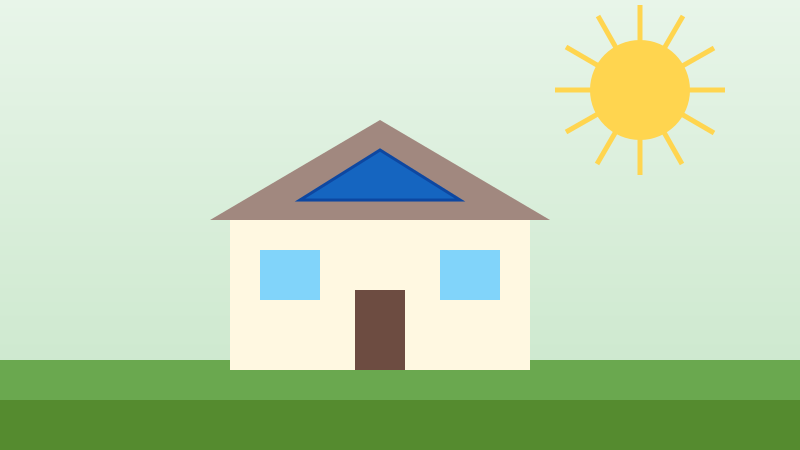
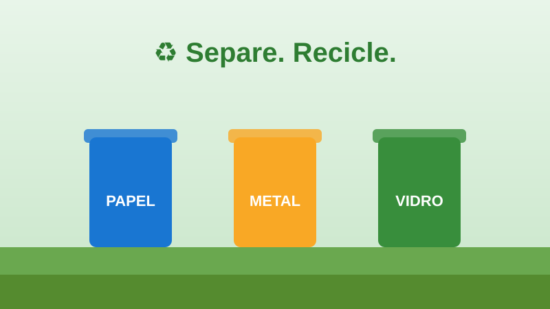
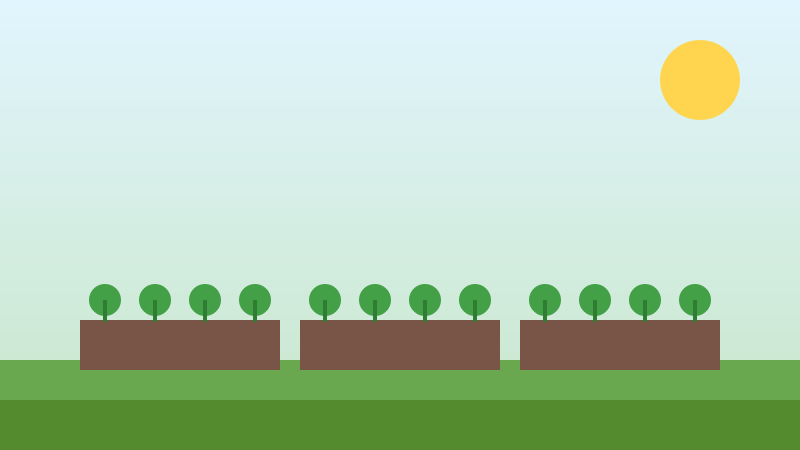
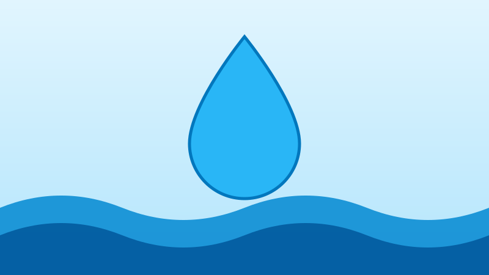
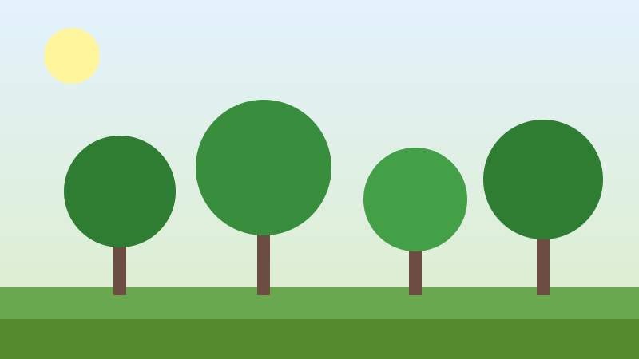
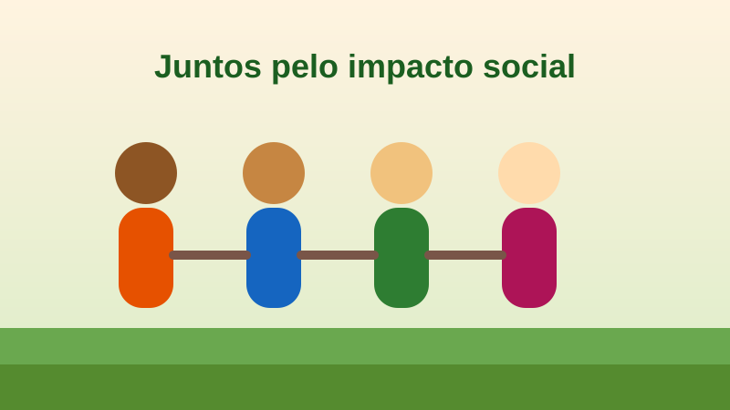

Energia solar comunitária
Instalação de painéis em espaços coletivos para reduzir a conta de luz.
- Menos emissões de carbono
- Economia para famílias
- Oficinas de instalação
Iniciativas que cuidam do ambiente e geram benefícios para as pessoas.

Instalação de painéis em espaços coletivos para reduzir a conta de luz.

Pontos de coleta que valorizam catadores e cooperativas de reciclagem.

Hortas em terrenos ociosos, com alimentos para a vizinhança.

Captação de água da chuva e campanhas de economia.

Mutirões de plantio em áreas degradadas e praças.

Capacitação gratuita com foco em jovens, idosos e pessoas com deficiência.